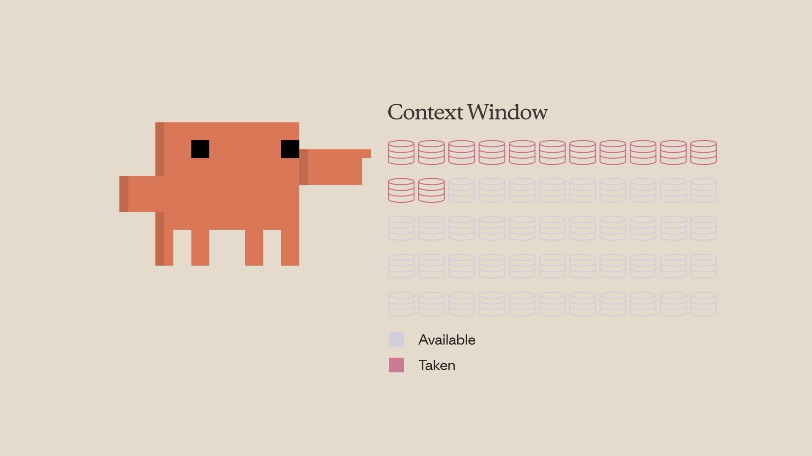
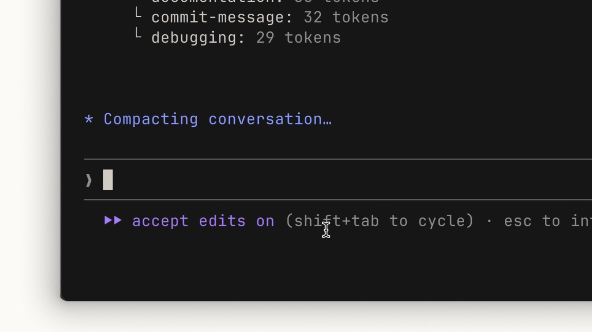
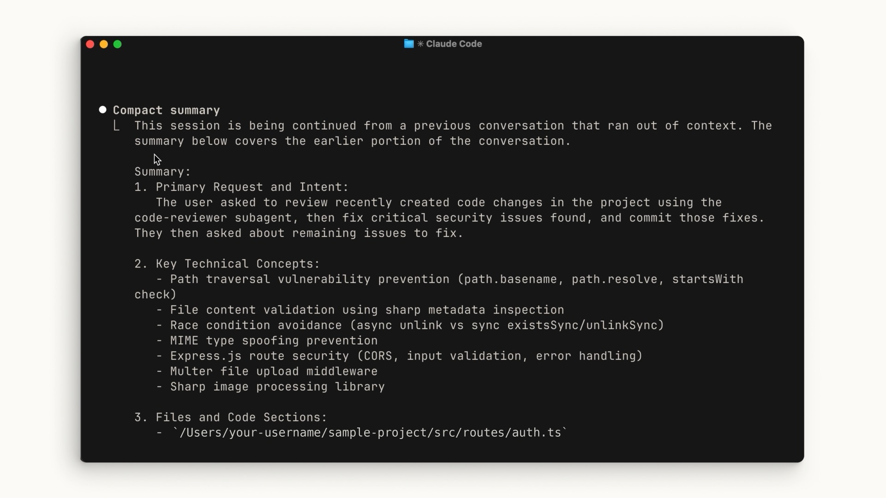
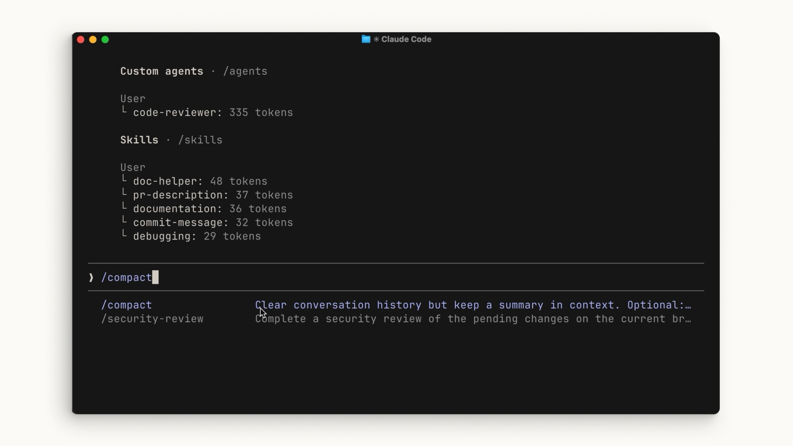
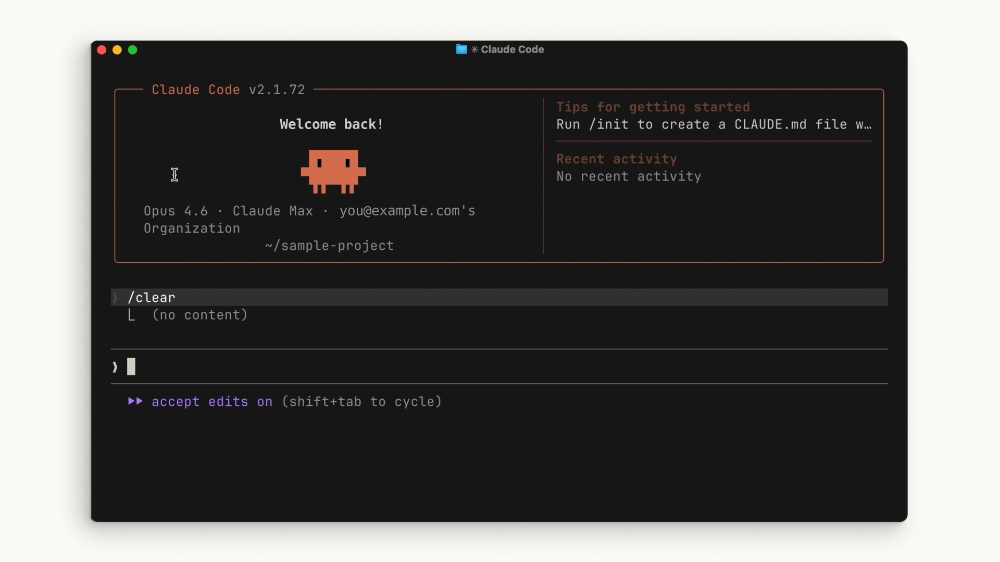
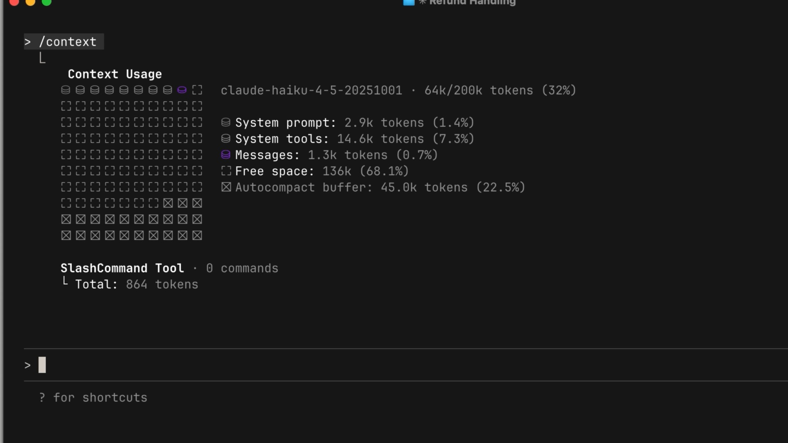
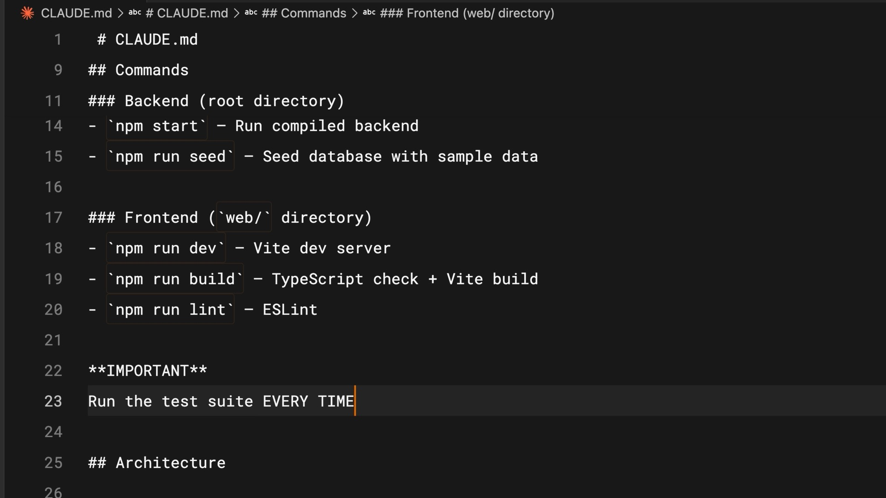

Управление контекстом
Чему научитесь
Видео 3:30 и текст урока
К концу урока вы сможете:
- объяснить, что занимает место в контекстном окне и что происходит при его автоматическом сжатии;
- выбирать между
/compactи/clearи проверять состояние контекста командой/context; - экономить контекст: писать конкретные промпты, отключать лишние MCP-серверы и поручать поиск субагентам.
Видео и текст урока.
Контекст — это рабочая память Claude. Каждый прочитанный файл, каждая запущенная команда, каждое ваше сообщение — всё это занимает место в контекстном окне.
Что такое контекстное окно?
Контекстное окно можно представить как объём, который Claude способен удерживать в памяти. Ваши промпты, файлы, которые читает Claude, вызовы инструментов и их результаты — всё это добавляется в контекстное окно. Место в нём ограничено, поэтому расходовать его важно с умом.

Что происходит, когда контекст заполняется
Когда вы приближаетесь к пределу, контекстное окно автоматически сжимается (compaction). Сжатие кратко пересказывает важные подробности и убирает ненужные результаты вызовов инструментов, освобождая место. Учтите, что при этом часть подробностей может потеряться.


Команды
Сжатие можно запустить вручную командой /compact. Она сжимает всё, что накопилось до этого момента. Это удобно, когда нужно освободить место в контексте, но сохранить память о том, над чем вы уже работали.

/compact в меню автодополнения.Если хотите начать совсем с чистого листа, без памяти о прошлой сессии, запустите /clear. Эта команда удаляет всё.

/clear сессия начинается заново.Чтобы проверить состояние контекста, запустите команду /context. Она покажет общую картину: размер контекста, категории, которые занимают больше всего места, и наглядную схему с разбивкой.

/context: сколько места занято и чем — по категориям и на схеме.Когда что использовать
Общее правило такое:
- Используйте
/compact, когда работаете над конкретной функциональностью, упираетесь в предел контекста, но работу нужно продолжить. Важно, чтобы контекст касался именно той функциональности, над которой вы работаете. -
Используйте
/clear, когда начинаете новую функциональность. Прошлый разговор не должен влиять на новую работу. То, что Claude должен помнить между сессиями, запишите в файлCLAUDE.md, чтобы ему не приходилось выяснять всё с нуля.
CLAUDE.md: команды, важные пометки и архитектура — то, что нужно помнить между сессиями.
Как экономить место в контексте
Будьте конкретны. Расплывчатый промпт может показаться короче, но в итоге обходится контексту дороже. Без чётких указаний Claude приходится больше исследовать кодовую базу и самому додумывать задачу, а это занимает в контексте гораздо больше места, чем занял бы подробный промпт.
Следите за MCP-серверами. По умолчанию подключённый MCP-сервер загружает в контекст только имена своих инструментов и инструкции, а полное описание инструмента подгружается, когда этот инструмент понадобится Claude. И всё же каждый сервер занимает какое-то место, поэтому серверы, настроенные для задач, не связанных с текущим проектом, стоит отключить.
Пользуйтесь субагентами. Субагенты работают параллельно с основным агентом, но у них совершенно отдельное контекстное окно. В задачах, где вам нужен только ответ, — например, «где находятся эндпоинты аутентификации?» — субагент делает работу и возвращает основному агенту лишь краткую сводку, так что основной контекст остаётся чистым.
Попробуйте сами
В сессии, в которой вы уже какое-то время работаете, запустите /context и выясните, что занимает больше всего места. Если продолжаете работать над той же функциональностью, запустите /compact. Если начинаете что-то новое — /clear. Затем снова запустите /context и посмотрите, что изменилось.
Итог
Управлять контекстом в Claude Code крайне важно. Используйте /compact, чтобы сжать длинную сессию в сводку, и /clear, чтобы начать заново. Чтобы расходовать контекстное окно с толком, пишите конкретные промпты, проверяйте, что занимает текущий контекст, и поручайте субагентам задачи, от которых вам нужен только результат.
Дальше
Следующий урок — «Ревью кода»: как самому просмотреть изменения Claude и попросить его проверить их ещё раз в чистом контексте.
Оригинал урока: Context management.